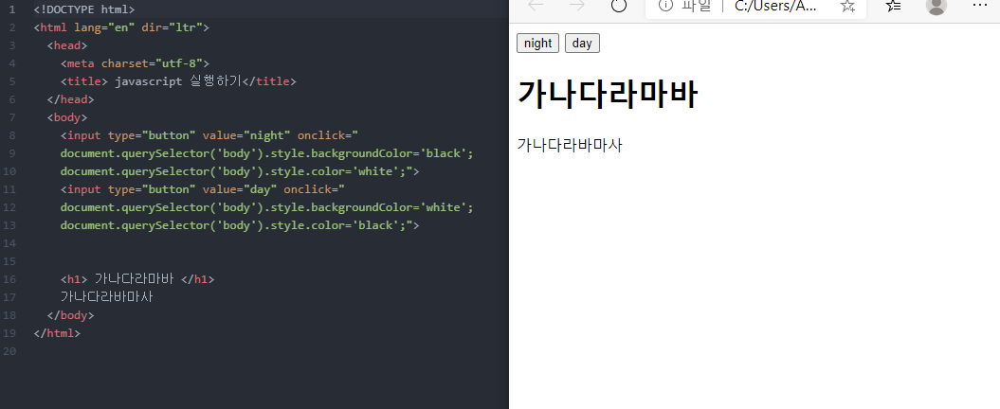
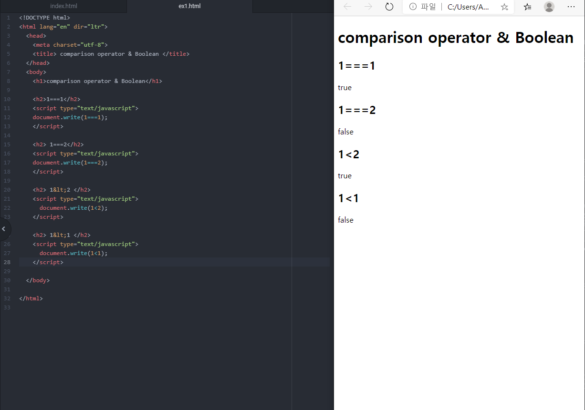

컴퓨터 코딩 - 12일,13일,14일
topic 8. 웹 브라우저 제어 생코의 예제와 같이 night mode를 만들고싶다 했을 때 css의 sytle태그를 이용한 디자인 태그가 필요하다. 디자인의 역할을 하는 css가 background-color:black; color:white;로 바꾸면 night mode를 만들 수 있긴하지만 이것은 끝까지 이런 디자인으로 남을 것이다. 우리가 원하는 것은 버튼을 눌렀을 때 night mode가 되고 끌수도있는 그런 상호작용을 원하기때문에 디자인 언어인 css와 버튼을 눌렀을 때 어느 선택자에서 어느 속성이 적용될지를 실행하는 JS의 기능을 같이 사용해야한다.
topic 9. css 기초 (sytle속성) topic 10. css 기초 (style태그) topic 11. css 기초 (선택자) 는 css를 들었기때문에 건너뛰어도 됨
topic 12. 제어할 태그 선택하기 javascript와 css를 같이 사용해야하는데, 먼저 만들고자 하는 box나, button과 같은 장치에 대한 태그를 먼저 써주고 type값, value값, 속성값을 써준다. 그 뒤에 javascirpt와 css의 문법을 동시에 사용해야하는데 이 때 검색의 힘을 빌린다. javascript select tag by css selector라는 것과 같이 궁금한 것을 차례로 적응한다. 검색에 대한 부분은 많은 연습일 필요할 것이라고 예상 그리고 난 뒤에 문법에 맞게 작성한다. 이후에 css sytle에 대한 디자인 정보를 입력해야하기때문에 javascript의 element(tag) 중 sytle태그를 어떻게 작성하는지에 대해서 다시 검색한다. javascript element style 이라고 검색을 하면 javascript에서 sytle태그를 어떻게 사용해야하는지에 대한 문법이 나오는데 이에 근거하여 태그를 작성하면된다. 중요한 것은 대문자,소문자 구분하고, 큰따옴표,작은따옴표의 사용용도에 따라서 구분, :과 =의 사용이 다르다는 것을 인지하고 작성해야한다. css에서 배웠던 것과 또 다른 문법을 사용하기때문에 굉장히 복잡하고 검색 자체도 어려워졌다고 생각이 들었으니 많은 검색과 눈에 익힘을 통해서 익숙해지는 것이 중요하다. 또한 오류가 생길 수 있는건 javascript 태그로 예시와 같이 night,day mode를 만들었는데 원하는대로 나오지않는다고 하면 기존에 style.css 파일에서 a,ul,ol태그들의 색상이 미리 지정이 되어있다고 하면 적용이 되지않을 수도 있다. 최종적으로 css파일이 적용되기때문에 안될수도있으니 수정도 해야함! 
topic 13. 프로그램,프로그래밍,프로그래머 html과 javascript는 모두 컴퓨터 언어이지만 html은 프로그래밍언어가 아니고 javascript는 프로그래밍언어이다. 순서에 따라 실행하게 하는 것 html은 명사, css는 형용사, javascript는 동사
topic 14. 조건문 예고 토글을 구현하고싶다. -> 한 개의 버튼을 이용하여 night/day mode를 모두 구현한다.
topic 15. 비교연산자와 Boolean 데이터 타입 비교연산자인 === 는 이항연산자인데 좌항과 우항을 결합해서 데이터를 만든다. 그 데이터의 값이 true나 false로 나오는 것을 Boolean data type이라고 한다. 그래서 Boolean데이터 타입은 num,str과 다르게 데이터의 결과값이 true나 false만의 결과값을 만들어낸다. Boolean은 단순반복을 해결할 수 있게 해준다! 